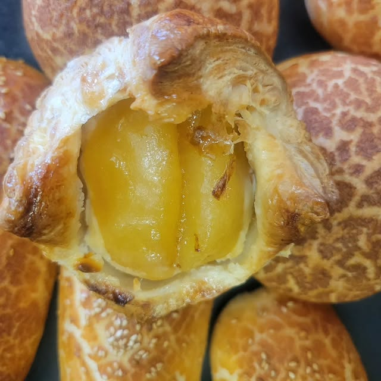
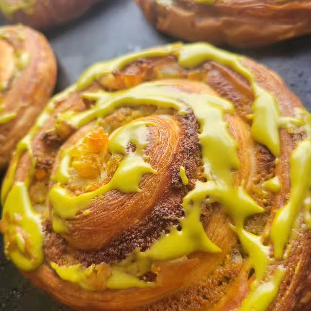
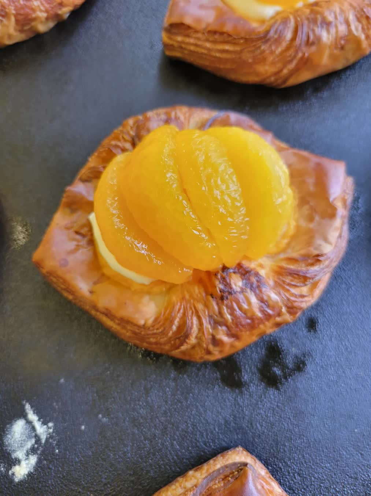
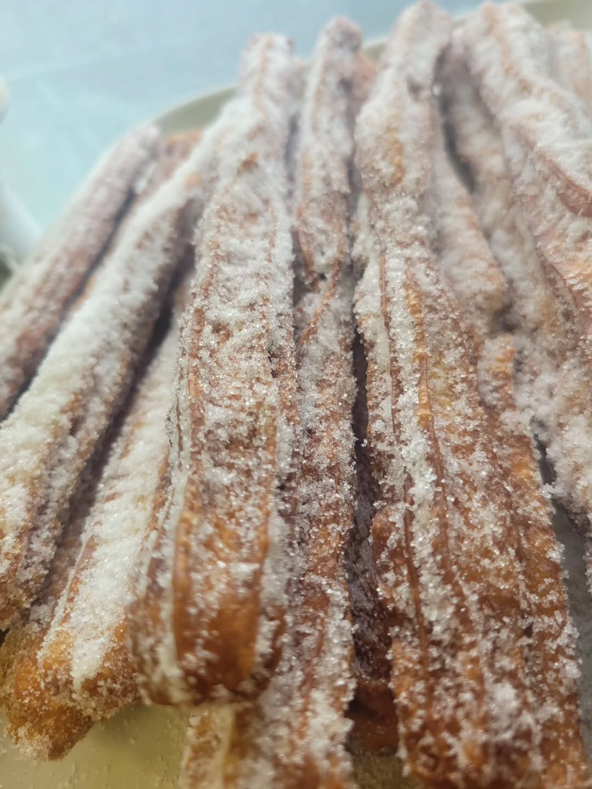
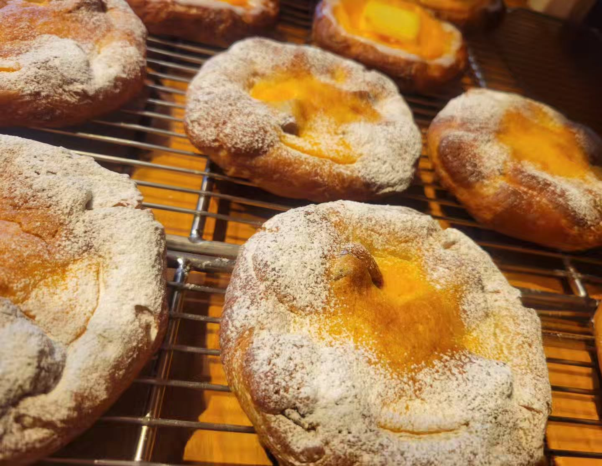
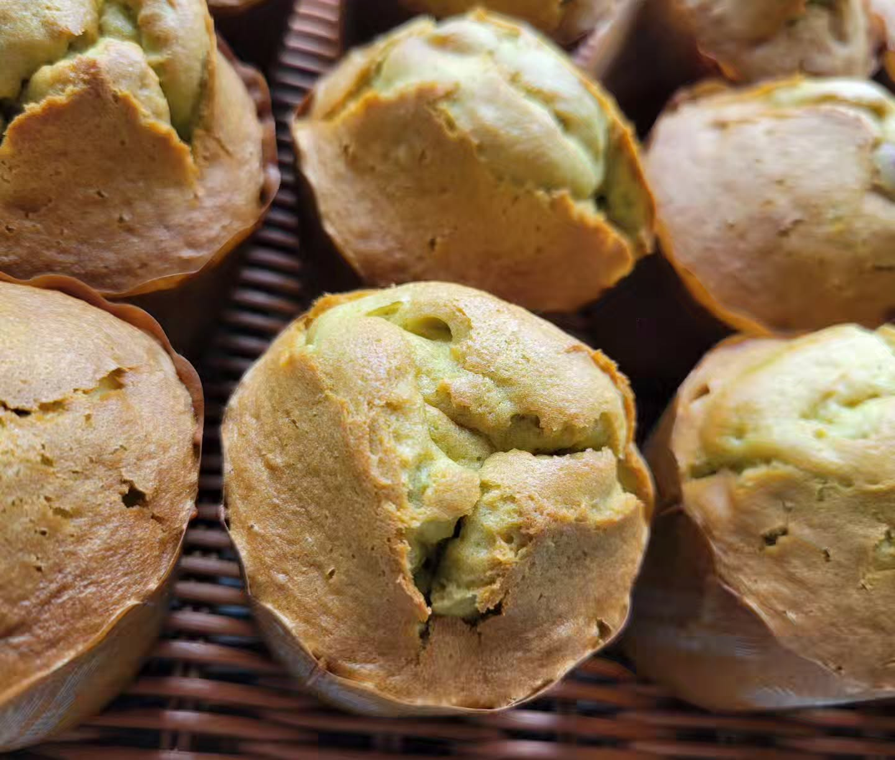
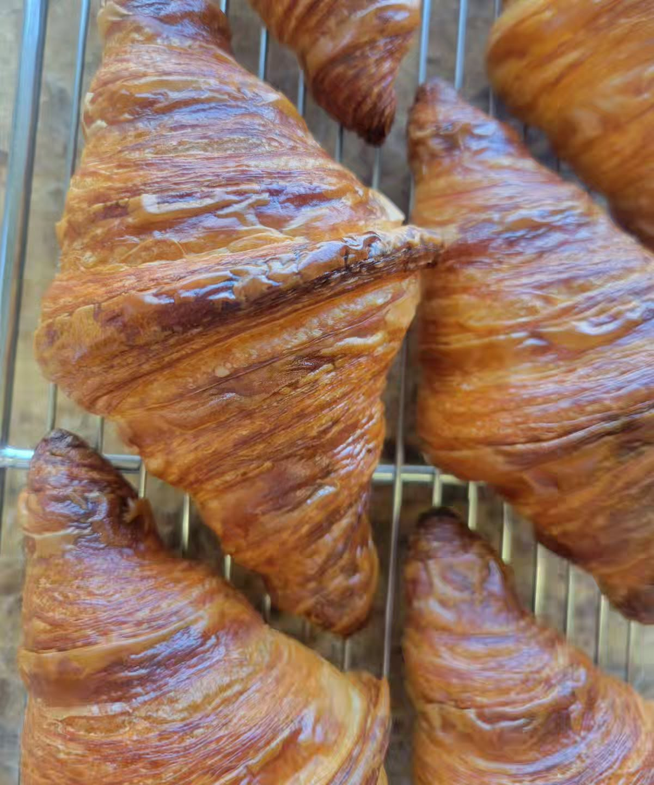

Conceptル・ポポタンについて
東武東上線ふじみ野駅から歩いて11分ほど。
ハード系からお菓子のパン、お食事パン、サンドイッチまで、
毎日およそ80種類のパンを焼いています。
お昼どきには行列ができる日も。
焼きたてを、テイクアウトでどうぞ。







photos from @boulangerie_lepopotin
Item人気のパン
-
クロワッサン
バターの香り、パリッと軽い定番。
-
メロンパン
クッキー生地がカリッと香ばしい小ぶりサイズ。
-
焼きカレーパン
揚げずに焼き上げる、お食事パンの人気者。
ほかにもバゲットやサンドイッチなど、日替わりでたくさん並びます。
毎日およそ80種類、
今日も窯からパンが出ます。
Access店舗情報
| 店名 | ル・ポポタン（Boulangerie Le Popotin） |
|---|---|
| 住所 | 〒356-0038 埼玉県ふじみ野市駒林元町3-8-1 |
| 電話 | 049-214-4774 |
| 営業時間 | 9:00 − 19:00 |
| 定休日 | 月曜日・火曜日 |
| アクセス | 東武東上線「ふじみ野駅」東口より徒歩約11分 駐車場あり |
| スタイル | テイクアウト専門 |
Contact最新情報
焼き上がりや新作のお知らせはSNSで。